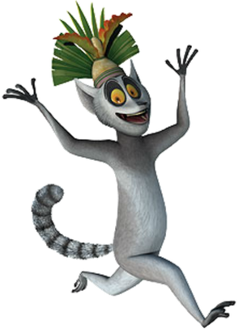

<
KingJulien
King Julien the 13th!

<King Julien XIII, simply referred to as King Julien, formerly known as Prince Julien, and sometimes nicknamed Julie, is the tritagonist of Madagascar, a supporting protagonist of Escape to Africa and Europe's Most Wanted, the deuteragonist of The Penguins of Madagascar TV series and the main protagonist of All Hail King Julien.
In Europe's Most Wanted, Julien gives up being king to be with his bear girlfriend, Sonya.
Julien is voiced by Sacha Baron Cohen in the films and Danny Jacobs in the TV series, Penguins of Madagascar and All Hail King Julien series.